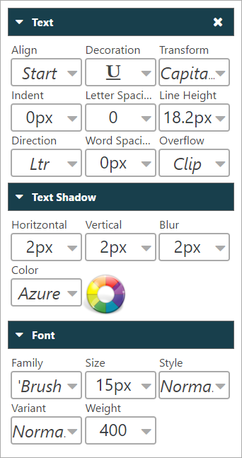
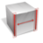
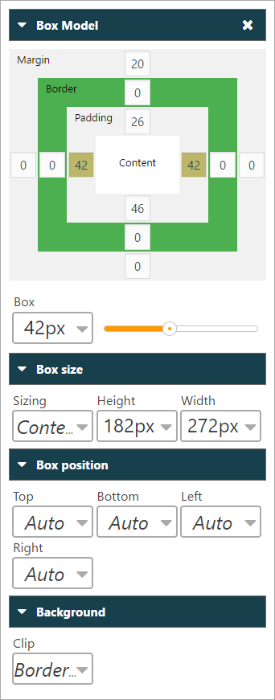
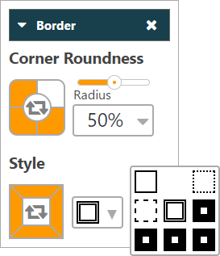
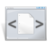
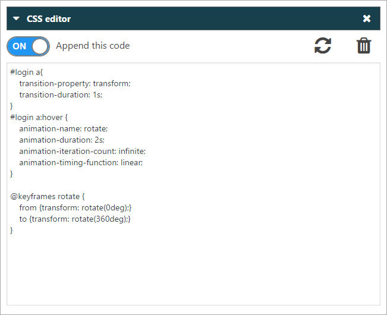
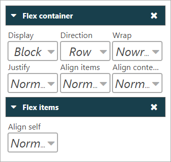
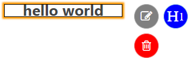
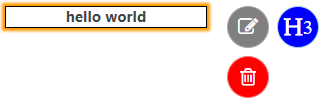
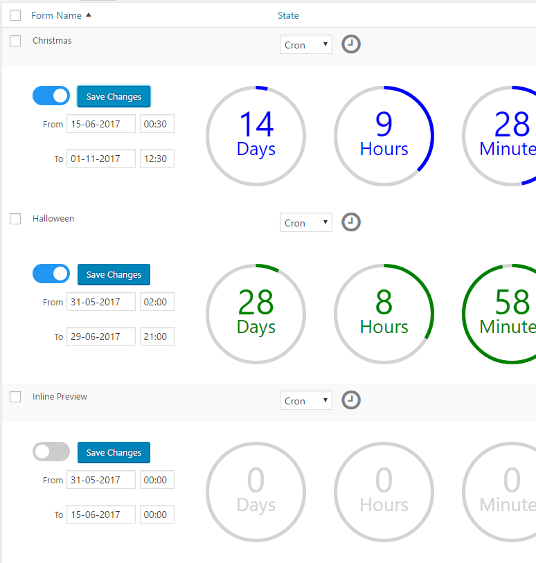

Created: 01/25/2017
By: Francisco Javier Fortit
Email: support@wplogincontrol.com
Thank you for purchasing my plugin. If you have any questions that are beyond the scope of this help file, please feel free to email via my user page contact form here. Thanks so much!
WP Login Control easily customize your WordPress login page in minutes with no coding skills required.
Transform the default log-in page into a professional and unique page that blends nicely with your brand or identity.
Create as many forms as you want and activate them individually, randomly or with cron, you can preview and activate them in the backend.
WP Login Control not only gives style, goes one step further to be a WYSIWYG web Builder, you can create Shortcodes and add new HTML tags, write inside them and style them.
This plugin is Multilingual ready, available translations: English and Spanish.
A new line will appear in the forms table, if you put the mouse over, four icons will appear:
In the area of design we can find four main icons.
Tools - Click this button to open the toolboxes, click again to close, if there is a box that is child of this, it will also be closed.
Images - Click this button to open the picture box, Click again to close.
Save - Click this button to save changes.
Dashboard - Click this button to return to Dashboard, If the changes have not been saved, they are ignored.
All the Toolboxes can be dragged and dropped anywhere on the screen, to facilitate the editing of any element.
You can expand or collapse the Toolboxes with the arrow icon.
To close the Toolboxes, click on the cross icon.
To minimize the Toolboxes, click on the underscore icon.
We will list all items from left to right and top to bottom.
Remember that before using the different tools you have to select the objects or Tags to modify, by default Background is selected.
TRICK - Remember that you can use CTRL+CLICK to select or deselect more than one object.
Sometimes if you select a color and it does not change, it is possible that the opacity is set to 0 or "transparent" option is selected.
TRICK - If you select "border" a box will appear with the four sides of the box. We can select them individually to assign different colors to each side. The center button reverses the selection.
Once you have selected the objects or tags to modify, you only have to expand the desired Combobox and just move the mouse over the different options we can check the result, finally we will click on the desired option.
The operation is equal to "Text and Font" except for "Box Model" that to use the slider first we have to select the numerical boxes that make reference to each side of "Margin, Border and Padding", where we want to apply the changes.
 TRICK - We can select more than one numerical box at a time, either "Margin, Border or Padding" and even combine them.
TRICK - If we click on the square where the name of any of the "Margin, Border or Padding" properties is found, all the numerical boxes of that property are selected, deselected or inverted.
As in border colors, we can select the sides of the box to change the line style or the corners for rounding. The center button reverses the selection.
Sliding the buttons to "ON" will activate the desired options.
The last three options allow us to edit the different types of forms available, "Login", "Lost you password" and "Register".
TRICK - Remember to save before leaving the designer.
We regularly add new CSS properties, but if you need any CSS property that is not available, you can write your CSS code here.
The editor does not correct the code errors.
 TRICK - Remember to put the toggle button to "ON".
To add or update the code click
TRICK - Remember to save before leaving the designer.
Flexible boxes (flexbox) ensures that elements behave predictably when the page layout must accommodate different screen sizes and different display devices.
TRICK - If we right click the "H" button the number of the header will rise, if we click the left button the number will go down.
 At the moment only one variable is available for Shortcodes.
TRICK - Remember that you can drag the menu for convenience, the menu automatically appears in the position where it can be fully expanded.
With Cron we can program when to activate and deactivate the visibility of any form at a specific date and time.
Shortcodes can also use Cron, for example if we create two banners in two different Shortcodes, we can insert these Shortcodes one after another and will be displayed depending on the cron configuration.
Select "Cron" in the "state" column and press
Insert the start and end dates, activate the "ON" button and finally click on "save changes".
A countdown will appear indicating:

Remember to put the toggle button to "ON" before saving the changes.